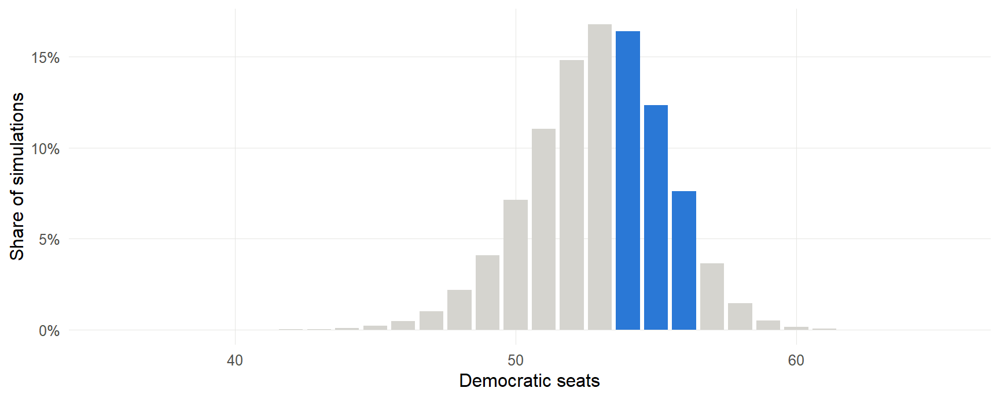
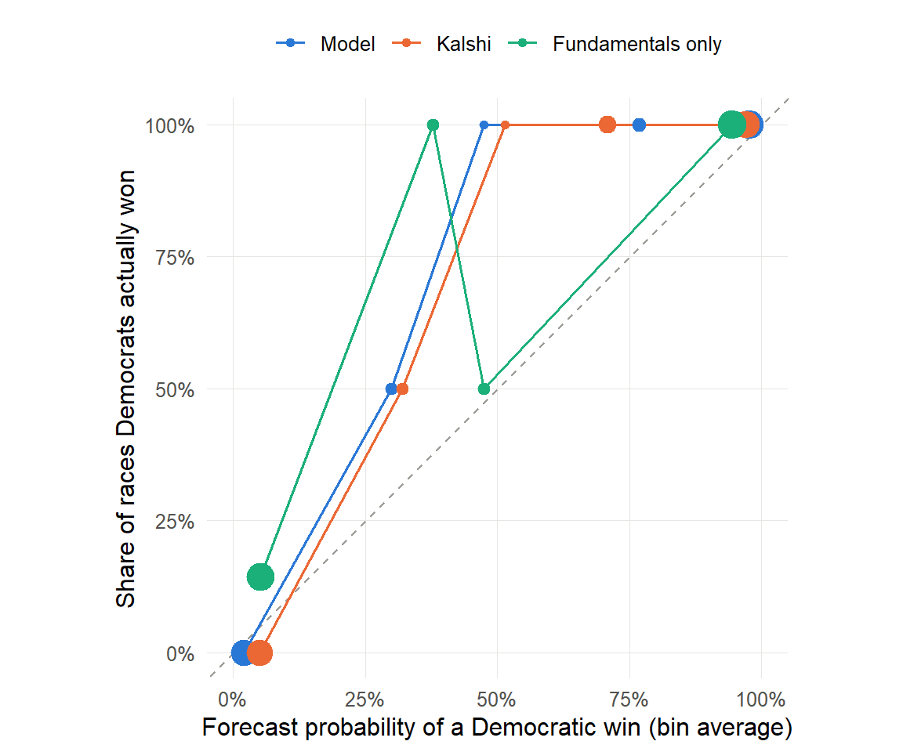
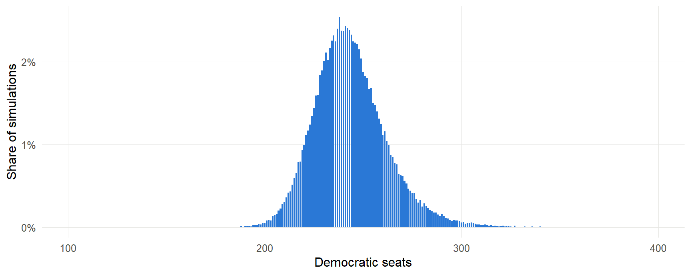
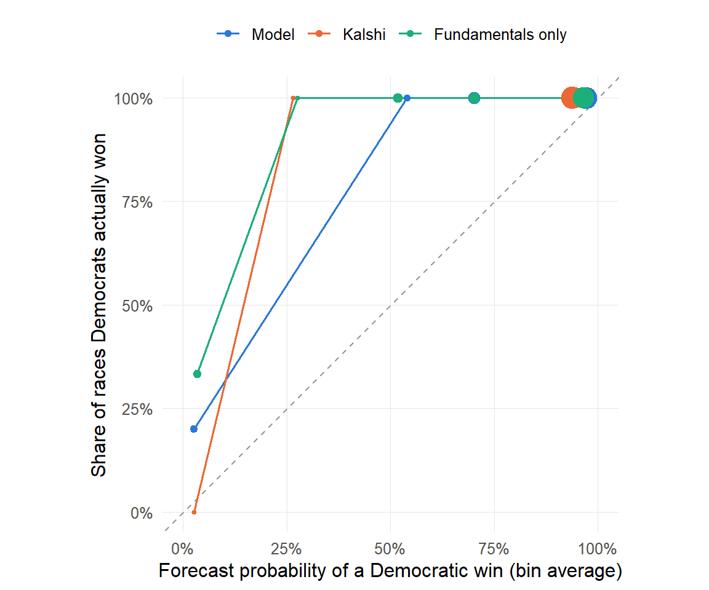

2026 Forecast Scorecard
How the Team 5 Senate forecast and my House forecast held up against the results
A forecast is only as good as its record. This page scores the final 9:00 AM Election Day forecasts from the forecast page against what actually happened, race by race and seat by seat, and holds them up against two benchmarks: the Kalshi prediction market and a fundamentals-only baseline built from each model’s own prior.
Results as of 2026-11-04 17:29 EST. Senate: 33 of 35 contested races resolved (94%), 0 with vote margins. House: 73 of 418 contested races resolved (17%), 0 with vote margins. Race-level scores are treated as final once 90% of contested races are resolved. Vote margins are provisional until states certify their results.
How the forecasts are scored
Each forecast gave every race a probability \(p_i\) that the Democrat (or the Democratic-aligned independent) would win, and a projected margin with an uncertainty band. Each race then has an outcome \(o_i\), which is 1 if that side won and 0 otherwise. The scores below measure two different things.
Accuracy asks how close the probabilities were to what happened.
- Brier score (the ranking metric): \(BS = \frac{1}{N}\sum_{i=1}^{N} (p_i - o_i)^2\). Zero is perfect; always guessing 50% scores 0.25.
- Log loss: \(LL = -\frac{1}{N}\sum_{i=1}^{N} \left[ o_i \ln p_i + (1 - o_i)\ln(1 - p_i) \right]\). This punishes confident misses much harder than the Brier score. Probabilities are clipped to \([10^{-4}, 1 - 10^{-4}]\) so that one 0% forecast cannot make the score infinite.
- Skill vs. Kalshi: \(1 - BS_{\text{forecast}} / BS_{\text{Kalshi}}\), computed on the races that had a Kalshi market. Positive means the forecast beat the market, and it puts the Senate and House on the same scale.
- Margin error: mean absolute error, RMSE, and bias of the projected margin, where positive bias means the forecast leaned too Democratic.
Reliability asks whether the stated confidence was honest.
- Murphy decomposition: \(BS = \text{Reliability} - \text{Resolution} + \text{Uncertainty}\), using 5 equal-width probability bins. Reliability is the calibration error (lower is better): do the 70% calls come in about 70% of the time? Resolution measures how sharply the forecast separated winners from losers (higher is better).
- Interval coverage: the share of actual margins that landed inside the forecast’s 80% and 95% intervals. A well-calibrated forecast hits close to 80% and 95%.
- Seat distribution: the continuous ranked probability score, \(CRPS = \sum_k \left(F(k) - \mathbf{1}\{k \ge y\}\right)^2\), where \(F\) is the forecast’s cumulative seat distribution and \(y\) is the actual number of Democratic seats. It rewards a distribution that is both close and appropriately confident.
Two rules keep the comparison fair. Safe seats make every forecaster look good, so each table is also shown for competitive races only: races where any of the three forecasters gave the trailing side at least 5%. And House seats that could not change hands, because both finalists were from the same party or only one party ran, are left out of the race-level scores.
The fundamentals-only baseline turns each model’s prior (partisan lean, the national environment, and incumbency, before any polls or Kalshi) into a probability, using the model’s own prior uncertainty: 9.32 points in the Senate and 6.56 in the House. If the full model cannot beat it, the polls and market inputs added nothing.
Senate
The chamber
| Measure | Forecast | Result |
|---|---|---|
| Control | 84.8% D (Kalshi 76.5%) | Democrats |
| Democratic seats | median 53, 80% range 50 to 56 | 54 to 56 (2 races pending) |
| Seat error (actual - median) | - | pending |
| Inside 80% seat range | - | pending |
| Forecast probability of the seat range still possible | - | 36.3% |
| Seat-distribution CRPS (lower is better) | - | pending |

Race-level accuracy
Forecasters are ranked by Brier score on the races all three covered, the ones with a Kalshi market; the score on all races is shown alongside.
Competitive races
| Rank | Forecaster | Brier, Kalshi races | Kalshi races | Brier, all races | All races | Log loss | Correct calls | Skill vs. Kalshi | Reliability | Resolution |
|---|---|---|---|---|---|---|---|---|---|---|
| 1 | Model | 0.061 | 16 | 0.061 | 16 | 0.215 | 88% | 26.1% | 0.034 | 0.184 |
| 2 | Kalshi | 0.083 | 16 | 0.083 | 16 | 0.292 | 94% | - | 0.049 | 0.184 |
| 3 | Fundamentals only | 0.166 | 16 | 0.166 | 16 | 0.483 | 75% | -99.9% | 0.072 | 0.100 |
All contested races
| Rank | Forecaster | Brier, Kalshi races | Kalshi races | Brier, all races | All races | Log loss | Correct calls | Skill vs. Kalshi | Reliability | Resolution |
|---|---|---|---|---|---|---|---|---|---|---|
| 1 | Model | 0.030 | 33 | 0.030 | 33 | 0.106 | 94% | 26.5% | 0.016 | 0.224 |
| 2 | Kalshi | 0.041 | 33 | 0.041 | 33 | 0.152 | 97% | - | 0.023 | 0.224 |
| 3 | Fundamentals only | 0.081 | 33 | 0.081 | 33 | 0.238 | 88% | -98.9% | 0.028 | 0.172 |
Race by race, the Team 5 model had a lower Brier score than Kalshi in 15 of the 16 competitive races that had a market, and Kalshi was closer in 1.
Calibration

Margins
Vote margins are not in yet. This section fills in automatically once results tables are published.
Largest errors
| Race | Model P(Dem) | Kalshi P(Dem) | Fundamentals P(Dem) | Winner | Forecast margin | Actual margin | Model Brier | Kalshi Brier |
|---|---|---|---|---|---|---|---|---|
| South Carolina | 34.3% | 30.5% | 19.8% | Democrats | R+1.8 | - | 0.432 | 0.483 |
| Iowa | 47.4% | 51.5% | 37.8% | Democrats | R+0.3 | - | 0.276 | 0.235 |
| Kansas | 72.3% | 62.5% | 15.9% | Democrats | D+2.5 | - | 0.077 | 0.141 |
| Nebraska | 25.6% | 33.5% | 11.3% | Republicans | R+3.1 | - | 0.065 | 0.112 |
| Texas | 78.8% | 71.5% | 37.8% | Democrats | D+3.3 | - | 0.045 | 0.081 |
| Ohio | 79.3% | 70.5% | 53.0% | Democrats | D+3.5 | - | 0.043 | 0.087 |
| Maine | 87.7% | 71.5% | 81.8% | Democrats | D+4.8 | - | 0.015 | 0.081 |
| Florida | 11.3% | 12.5% | 41.9% | Republicans | R+5.2 | - | 0.013 | 0.016 |
Every race
| Race | Model P(Dem) | Kalshi P(Dem) | Winner | Forecast margin | Actual margin | Call source |
|---|---|---|---|---|---|---|
| Iowa | 47.4% | 51.5% | Democrats | R+0.3 | - | Kalshi settlement |
| Alaska | 59.6% | 69.5% | - | D+1.1 | - | uncalled |
| South Carolina | 34.3% | 30.5% | Democrats | R+1.8 | - | Kalshi settlement |
| Kansas | 72.3% | 62.5% | Democrats | D+2.5 | - | Kalshi settlement |
| Nebraska | 25.6% | 33.5% | Republicans | R+3.1 | - | Kalshi settlement |
| Texas | 78.8% | 71.5% | Democrats | D+3.3 | - | Kalshi settlement |
| Ohio | 79.3% | 70.5% | Democrats | D+3.5 | - | Kalshi settlement |
| Maine | 87.7% | 71.5% | Democrats | D+4.8 | - | Kalshi settlement |
| Florida | 11.3% | 12.5% | Republicans | R+5.2 | - | Kalshi settlement |
| Mississippi | 10.0% | 13.5% | - | R+6.7 | - | uncalled |
| Minnesota | 92.1% | 90.1% | Democrats | D+6.4 | - | Kalshi settlement |
| Michigan | 92.5% | 78.5% | Democrats | D+6.1 | - | Kalshi settlement |
| Montana | 4.9% | 10.2% | Republicans | R+9.2 | - | Kalshi settlement |
| Louisiana | 3.9% | 13.5% | Republicans | R+12.2 | - | Kalshi settlement |
| Georgia | 98.5% | 96.5% | Democrats | D+10.2 | - | Kalshi settlement |
| New Jersey | 98.5% | 98.0% | Democrats | D+20.9 | - | Kalshi settlement |
| Kentucky | 1.5% | 3.6% | Republicans | R+20.9 | - | Kalshi settlement |
| New Hampshire | 98.6% | 93.2% | Democrats | D+9.9 | - | Kalshi settlement |
| Idaho | 0.9% | 3.3% | Republicans | R+17.1 | - | Kalshi settlement |
| Oklahoma | 0.6% | 2.0% | Republicans | R+24.9 | - | Kalshi settlement |
| South Dakota | 0.5% | 5.2% | Republicans | R+13.6 | - | Kalshi settlement |
| Illinois | 99.7% | 98.5% | Democrats | D+15.0 | - | Kalshi settlement |
| Alabama | 0.3% | 2.0% | Republicans | R+16.1 | - | Kalshi settlement |
| Delaware | 99.7% | 98.6% | Democrats | D+28.9 | - | Kalshi settlement |
| New Mexico | 99.7% | 98.7% | Democrats | D+18.9 | - | Kalshi settlement |
| Oregon | 99.8% | 98.7% | Democrats | D+28.9 | - | Kalshi settlement |
| Arkansas | 0.2% | 3.8% | Republicans | R+14.4 | - | Kalshi settlement |
| North Carolina | 99.8% | 96.8% | Democrats | D+13.5 | - | Kalshi settlement |
| Colorado | 99.8% | 98.5% | Democrats | D+19.1 | - | Kalshi settlement |
| Virginia | 99.9% | 97.9% | Democrats | D+18.8 | - | Kalshi settlement |
| Tennessee | 0.1% | 1.8% | Republicans | R+22.6 | - | Kalshi settlement |
| West Virginia | 0.0% | 1.4% | Republicans | R+36.7 | - | Kalshi settlement |
| Wyoming | 0.0% | 1.2% | Republicans | R+36.9 | - | Kalshi settlement |
| Rhode Island | 100.0% | 98.9% | Democrats | D+30.5 | - | Kalshi settlement |
| Massachusetts | 100.0% | 98.9% | Democrats | D+30.5 | - | Kalshi settlement |
House
The chamber
| Measure | Forecast | Result |
|---|---|---|
| Control | 94.2% D (Kalshi 93.8%) | Democrats |
| Democratic seats | median 242, 80% range 222 to 267 | 85 to 430 (345 races pending) |
| Seat error (actual - median) | - | pending |
| Inside 80% seat range | - | pending |
| Forecast probability of the seat range still possible | - | 100.0% |
| Seat-distribution CRPS (lower is better) | - | pending |

Race-level accuracy
Kalshi only listed markets for 63 of the resolved districts, so forecasters are ranked on those shared districts; the model and baseline scores on every resolved district are shown alongside.
Provisional: only 17% of contested races are resolved so far, and the earliest calls are not a random sample, so treat these numbers with caution.
Competitive races
| Rank | Forecaster | Brier, Kalshi races | Kalshi races | Brier, all races | All races | Log loss | Correct calls | Skill vs. Kalshi | Reliability | Resolution |
|---|---|---|---|---|---|---|---|---|---|---|
| 1 | Kalshi | 0.047 | 33 | 0.047 | 33 | 0.198 | 97% | - | 0.045 | 0.000 |
| 2 | Model | 0.068 | 33 | 0.078 | 39 | 0.279 | 95% | -45.9% | 0.075 | 0.000 |
| 3 | Fundamentals only | 0.129 | 33 | 0.137 | 39 | 0.435 | 85% | -177.4% | 0.131 | 0.000 |
All contested races
| Rank | Forecaster | Brier, Kalshi races | Kalshi races | Brier, all races | All races | Log loss | Correct calls | Skill vs. Kalshi | Reliability | Resolution |
|---|---|---|---|---|---|---|---|---|---|---|
| 1 | Kalshi | 0.025 | 63 | 0.025 | 63 | 0.116 | 98% | - | 0.023 | 0.016 |
| 2 | Model | 0.036 | 63 | 0.042 | 73 | 0.151 | 97% | -43.9% | 0.031 | 0.041 |
| 3 | Fundamentals only | 0.068 | 63 | 0.073 | 73 | 0.234 | 92% | -173.4% | 0.054 | 0.034 |
Race by race, my model had a lower Brier score than Kalshi in 18 of the 33 competitive districts that had a market, and Kalshi was closer in 15.
Calibration

Margins
Vote margins are not in yet. This section fills in automatically once results tables are published.
Largest errors
| Race | Model P(Dem) | Kalshi P(Dem) | Fundamentals P(Dem) | Winner | Forecast margin | Actual margin | Model Brier | Kalshi Brier |
|---|---|---|---|---|---|---|---|---|
| TX-09 | 13.1% | 26.5% | 13.6% | Democrats | R+6.4 | - | 0.755 | 0.540 |
| WI-01 | 49.9% | 52.0% | 61.5% | Democrats | Even | - | 0.251 | 0.230 |
| AL-02 | 52.2% | - | 63.0% | Democrats | D+0.3 | - | 0.228 | - |
| FL-22 | 55.5% | - | 57.8% | Democrats | D+0.7 | - | 0.198 | - |
| OH-07 | 58.6% | - | 27.5% | Democrats | D+1.2 | - | 0.172 | - |
| MI-04 | 61.4% | 60.9% | 56.1% | Democrats | D+1.6 | - | 0.149 | 0.153 |
| TX-15 | 61.7% | 88.1% | 6.4% | Democrats | D+1.5 | - | 0.147 | 0.014 |
| IA-02 | 63.4% | - | 59.3% | Democrats | D+1.9 | - | 0.134 | - |
Reading these numbers carefully
- The races are not independent. Both models simulate a shared national polling error, and a real-world miss moves every race in the same direction at once. Thirty-odd Senate races are therefore far fewer than thirty-odd independent tests, and small gaps between forecasters are mostly noise.
- One election is one draw. A well-calibrated forecast can still have a bad night. The calibration and coverage numbers matter more over many elections than over this one.
- Margins move after Election Night. Mail and provisional ballots are still being counted in many states, so margin scores will shift until results are certified.
- Early calls are not a random sample. Safe and lopsided races are called first, so partial results flatter every forecaster.
Data and sources
Race calls come from settled Kalshi election markets (each market settles once at least four of its eight designated media outlets have called the race), vote shares come from Wikipedia’s 2026 Senate and House results tables, and calls made on Election Night are seeded from news reports, with the source recorded for every race. When sources disagree, the script keeps the higher-priority source and logs the disagreement; there are currently 0 logged disagreements. The combined results tables and the scoring script are in this site’s repository under VizCode/Forecast/.